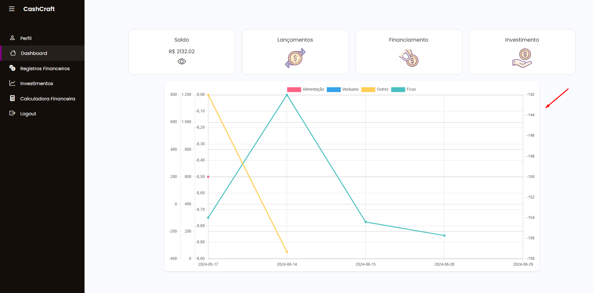
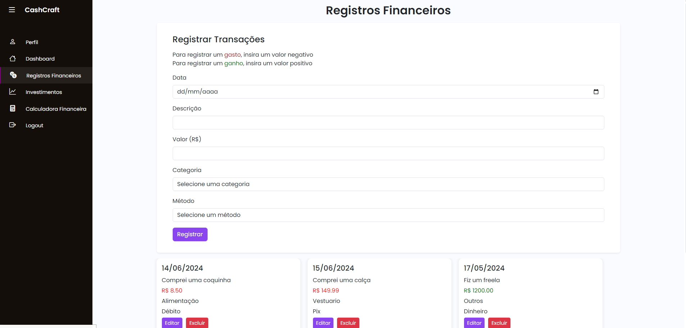
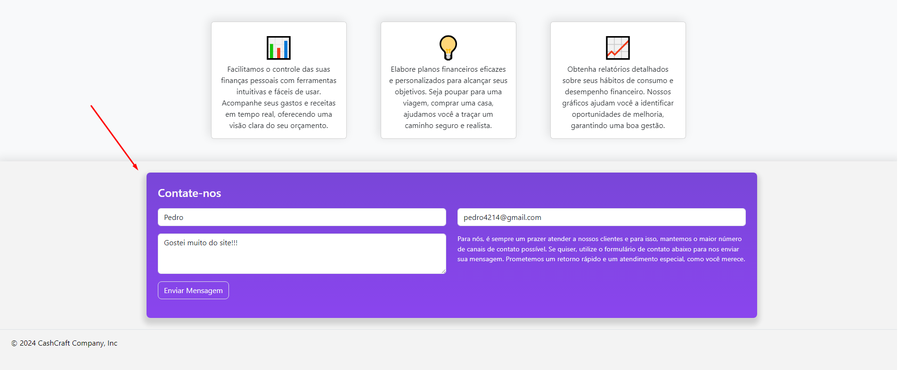
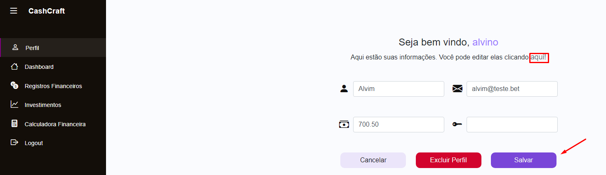
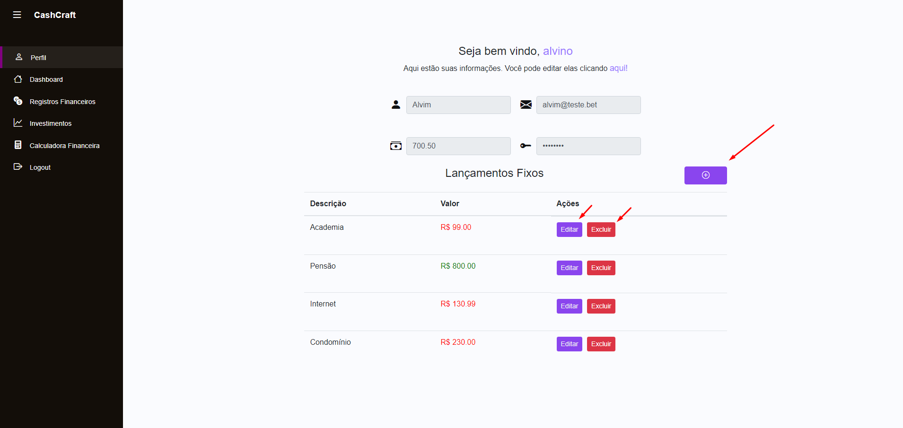
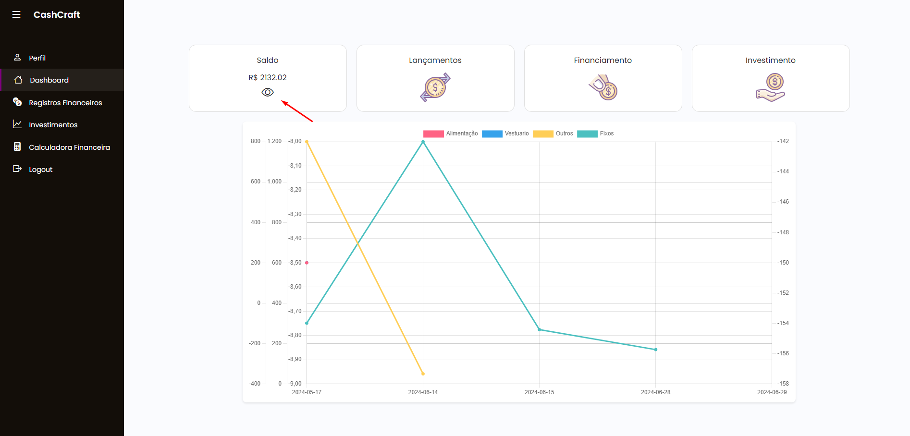
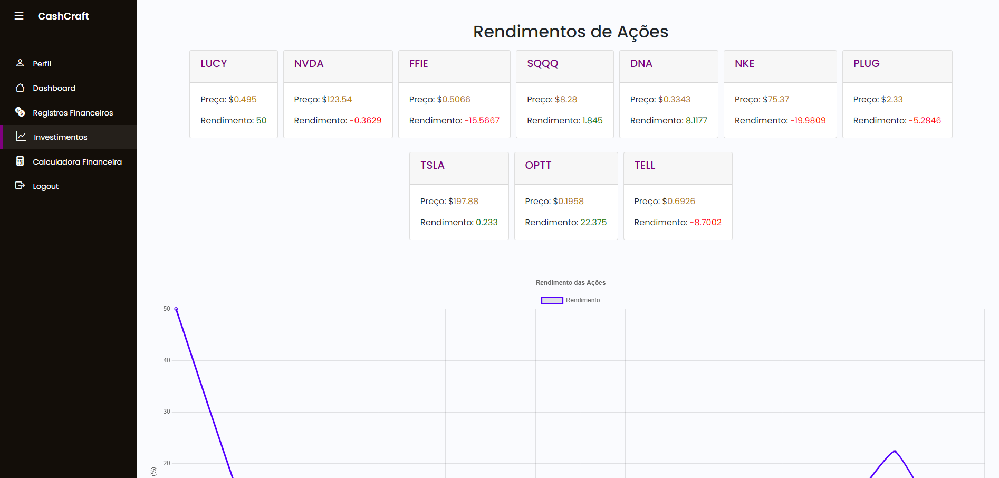

Introdução
Informações básicas do projeto como nome e membros da equipe.
Informações Gerais
- Projeto: CashCraft: Dominando suas Finanças
- Repositório GitHub: PLF-ES 2024 - Dificuldade em Gerenciar Finanças
- Membros da equipe:
Contexto
Detalhes sobre o espaço de problema, justificativas e os objetivos do projeto.
Problema
A falta de controle financeiro é um problema significativo no Brasil. Mais da metade da população (58%) não gerencia suas finanças, e 81% não têm conhecimento básico sobre como controlar seus gastos. Este descontrole resulta em 77,3% das famílias endividadas, com 26% gastando mais do que ganham e 42,6% raramente sobrando dinheiro no fim do mês. Apenas 45,2% realizam um controle sistemático do orçamento, e 29,3% fazem isso de forma precária, apenas na memória. Além disso, 39% nunca ou raramente calculam os juros de compras parceladas, e 33% nem sabem se já possuem outras prestações ao parcelar algo novo.
Objetivos
Nosso objetivo é criar uma solução abrangente para a gestão financeira pessoal, abordando desde problemas simples até complexos. Forneceremos orientações práticas e ferramentas como dicas de financiamento, tabelas de amortização e calculadoras de juros e rendimentos. Queremos capacitar os usuários a entenderem e controlarem melhor suas finanças, promovendo decisões financeiras informadas e seguras, visando maior estabilidade e qualidade de vida.
Justificativa
É inegável que oferecer suporte financeiro para as pessoas é importante. Muitas enfrentam dificuldades em lidar com dinheiro, o que pode resultar em endividamento e falta de planejamento financeiro. Capacitar as pessoas com conhecimentos sólidos em finanças pessoais não apenas melhora suas vidas, mas também fortalece a estabilidade financeira das comunidades. De acordo com o IBGE, 58% da população brasileira não gerencia suas finanças, e 81% não têm conhecimento básico sobre como controlar seus gastos. Ferramentas práticas como dicas de financiamento e calculadoras de juros podem facilitar a tomada de decisões financeiras. Com essas ferramentas, esperamos ajudar as pessoas a alcançar seus objetivos financeiros de maneira mais eficiente, reduzir o endividamento das famílias e promover uma cultura de planejamento financeiro consciente no Brasil.
Público-alvo
Nosso público-alvo inclui jovens iniciando suas vidas financeiras e trabalhadores da classe C, que já possuem algum conhecimento sobre gestão financeira, mas precisam de suporte adicional para alcançar objetivos mais elevados. A combinação de orientação prática e ferramentas financeiras ajudará esses grupos a gerir melhor suas finanças e a construir um futuro financeiro mais sólido.
Concepção (Design Thinking)
Detalhes do processo de discovery do projeto.
Apresente o processo de discovery do projeto. Com foco na experiência do usuário, esse processo abrange a compreensão do contexto do problema e das características do usuário, a definição do problema, a geração de ideias, a prototipagem e a elaboração de uma proposta de solução
Processo de Design Thinking
O arquivo que se segue apresenta o resultado desse processo.
Apresente o processo de Design Thinking realizado pelo grupo e documentado por meio do software Miro. No documento apresentado, devem ser incluídos: (1) a matriz CSD, (2) o mapa de stakeholders, (3) as personas, (4) as respectivas propostas de valor e (5) o processo de ideação identificando as ideias levantadas e sua priorização.
Especificações do Projeto
Documentação das especificações do projeto.
Apresente as especificações do projeto, incluindo as histórias de usuário e os requisitos funcionais e não funcionais.
Histórias de Usuários
Com base na análise das personas foram identificadas as seguintes histórias de usuários:
Apresente aqui as histórias de usuário que são relevantes para o projeto de sua solução. As Histórias de Usuário consistem em uma ferramenta poderosa para a compreensão e elicitação dos requisitos funcionais e não funcionais da sua aplicação. Se possível, agrupe as histórias de usuário por contexto, para facilitar consultas recorrentes à essa parte do documento.
EU COMO...PERSONA |
QUERO/PRECISO...FUNCIONALIDADE |
PARA...MOTIVO/VALOR |
|---|---|---|
| Pedro | Organizar melhor meu dinheiro | Futuramente abrir minha clínica |
| Lucia | Investir melhor meu dinheiro | Poder comprar meu AP dos sonhos |
| Alberto | Controlar meus gastos | Poder me tornar mais estável financeiramente |
| Estagiário de Psicologia | Saber meus gastos mensais | Ter noção do quanto eu consigo poupar |
| Empreendedora | Saber o pontapé inicial na hora de Investir | Poder aumentar Meus ativos |
| Programador | Saber meu lucro/déficit mensal | Ter noção de como meu dinheiro é usado |
Requisitos
As tabelas que se seguem apresentam os requisitos funcionais e não funcionais que detalham o escopo do projeto.
Com base nas Histórias de Usuário, enumere os requisitos da sua solução. Classifique esses requisitos em dois grupos:
- Requisitos Funcionais (RF): correspondem a uma funcionalidade que deve estar presente na plataforma (ex: cadastro de usuário).
- Requisitos Não Funcionais (RNF): correspondem a uma característica técnica, seja de usabilidade, desempenho, confiabilidade, segurança ou outro (ex: suporte a dispositivos iOS e Android).
Lembre-se que cada requisito deve corresponder à uma e somente uma característica alvo da sua solução. Além disso, certifique-se de que todos os aspectos capturados nas Histórias de Usuário foram cobertos.
Requisitos Funcionais
| ID | Descrição do Requisito | Prioridade |
|---|---|---|
| RF-001 | Disponibilizar para o usuário um relatório mensal de seus gastos | MÉDIA/ALTA |
| RF-002 | Permitir que o usuário insira seus gastos e suas receitas | ALTA |
| RF-003 | Permitir que o usuário dê feedbacks e sugestões sobre o software | BAIXA |
| RF-004 | Capacidade de registrar e gerenciar contas | ALTA |
| RF-005 | Capacidade de gerenciar e depreciar fixos | MÉDIA/ALTA |
| RF-006 | Capacidade de esconder/mostrar dados fincanceiros | BAIXA |
| RF-007 | Exibir informações sobre ações e cotações | BAIXA |
| RF-008 | Calculadora de financiamento | MÉDIA |
Requisitos Não-Funcionais
| ID | Descrição do Requisito | Prioridade |
|---|---|---|
| RNF-001 | O sistema deve ser responsivo para rodar em um dispositivos móvel | ALTA |
| RNF-002 | O sistema deve processar requisições do usuário em no máximo 4s | BAIXA |
| RNF-003 | O sistema deve ser compatível com os principais navegadores (Chrome, Firefox, Safari, Edge) e suas versões recentes, bem como sistemas operacionais populares (Windows, macOS, iOS, Android) | ALTA |
| RNF-004 | A interface do usuário deve ser intuitiva e fácil de usar, com uma navegação clara e consistente, permitindo que os usuários realizem tarefas com eficiência e sem a necessidade de treinamento extenso | ALTA |
| RNF-005 | O sistema deve ser capaz de se integrar com outros sistemas e APIs externas, permitindo a troca de dados e funcionalidades entre diferentes plataformas de maneira segura e eficiente | MÉDIA/ALTA |
Projeto de Interface
Artefatos relacionados com a interface e a interacão do usuário na proposta de solução.
Apresente a ideia de interface que está sendo prevista para o projeto. Inclua os wireframes, o user/screen flow e o protótipo interativo.
User/Screen Flow e Protótipo interativo
Artefatos relacionados com a interface e a interacão do usuário na solução proposta.
O fluxo de usuário (User Flow) é uma técnica que permite ao desenvolvedor mapear todo fluxo de telas do site ou app. Essa técnica funciona para alinhar os caminhos e as possíveis ações que o usuário pode fazer junto com os membros de sua equipe. 
Um protótipo interativo apresenta o projeto de interfaces e permite ao usuário navegar pelas funcionalidades como se estivesse lidando com o software pronto. Veja o exemplo a seguir.
Wireframes
Protótipo de telas do sistema em baixa fidelidade (rascunhos).
Os Wireframes são protótipos das telas da aplicação usados em design de interface para sugerir a estrutura de um site web e seu relacionamentos entre suas páginas. Um wireframe web é uma ilustração semelhante ao layout de elementos fundamentais na interface. 
Metodologia
Detalhes sobre a organização do grupo e o ferramental empregado.
Nesta parte do documento, você deve apresentar a metodologia adotada pelo grupo, descrevendo o processo de trabalho baseado nas metodologias ágeis, a divisão de papéis e tarefas, as ferramentas empregadas e como foi realizada agestão de configuração do projeto via GitHub.
Coloque detalhes sobre o processo de Design Thinking e a implementação do Framework Scrum seguido pelo grupo. O grupo poderá fazer uso de ferramentas on-line para acompanhar o andamento do projeto, a execução das tarefas e o status de desenvolvimento da solução.
Ferramentas
Relação de ferramentas empregadas pelo grupo durante o projeto.
Liste as ferramentas empregadas no desenvolvimento do projeto, justificando a escolha delas, sempre que possível. Inclua itens como: (1) Editor de código, ferramentas de comunicação, ferramentas de diagramação, plataformas de hospedagem, entre outras.
| Ambiente | Plataforma | Link de Acesso |
|---|---|---|
| Processo de Design Thinking | Miro | Cash Craft on Miro |
| Repositório de código | GitHub | Cash Craft on Github |
| Hospedagem do site | Render | Cash Craft on Render |
| Protótipo Interativo | Figma | Cash Craft on Figma |
Gestão do Projeto
Divisão de papéis no grupo e apresentação da estrutura da ferramenta de controle de tarefas (Kanban).
Apresente a divisão de papéis e tarefas entre os membros do grupo. Informe quem é o Scrum Master, o Product Owner e os desenvolvedores. Informe também quem é o responsável pela documentação do projeto.
Apresente o quadro de gerenciamento do time (Kanban), seu formato e as experiências na utilização dessa ferramenta (GitHub Projects)
Controle de Versão
Estrutura do fluxo de trabalho no ambiente do GitHub.
Discuta como a configuração do projeto foi feita na ferramenta de versionamento (GitHub). Exponha como a gerência de tags, merges, commits e branchs é realizada. Discuta como a gerência de issues foi realizada.

Solução
Esta seção apresenta todos os detalhes da solução criada no projeto.
Apresente cada uma das funcionalidades que a aplicação fornece tanto para os usuários quanto aos administradores da solução.
Inclua, para cada funcionalidade, itens como: (1) titulos e descrição da funcionalidade; (2) Estrutura de dados associada; (3) o detalhe sobre as instruções de acesso e uso.
Video do Projeto
O vídeo a seguir traz uma apresentação do problema que a equipe está tratando e a proposta de solução.
O video de apresentação é voltado para que o público externo possa conhecer a solução. O formato é livre, sendo importante que seja apresentado o problema e a solução numa linguagem descomplicada e direta.
Utilize o recurso de compartilhamento via embed e inclua o vídeo logo abaixo.
...... COLOQUE AQUI O SEU VIDEO ......
Funcionalidades
Esta seção apresenta as funcionalidades da solução.
Apresente cada uma das funcionalidades que a aplicação fornece tanto para os usuários quanto aos administradores da solução.
Inclua, para cada funcionalidade, itens como: (1) titulos e descrição da funcionalidade; (2) Estrutura de dados associada; (3) o detalhe sobre as instruções de acesso e uso.
Funcionalidade 1 - Disponibilizar para o usuário um relatório mensal de seus gastos
Esta funcionalidade é fundamental para garantir que os usuários tenham uma visão atualizada e precisa de suas despesas fixas recorrentes, permitindo um melhor planejamento financeiro e controle orçamentário.
- Estrutura de dados: Lancamentos
- Instruções de acesso:
- Abra o site e efetue o login
- Acesse o menu Dashboar
- Estará exibido na tela um grafico com relatório mensal de seus gastos

Funcionalidade 2 - Permitir que o usuário insira seus gastos e suas receitas
Funcionalidade para controlar os gastos e as receitas geradas no mês através de um sistema de formulário e tabela.
- Estrutura de dados: Lancamentos
- Instruções de acesso:
- Abra o site e efetue o login
- Acesse o menu registros financeiros
- Em seguida, efetue suas transações, Adicione, edite ou exclua um gasto.

Funcionalidade 3 - Permitir que o usuário dê feedbacks e sugestões sobre o software
A funcionalidade permite que os usuários enviem feedbacks e sugestões. Isso deve inclui um formulário acessível a partir da página principal, com campos para nome, e-mail, assunto. Após o envio, o usuário deve recebe uma confirmação na página, e a equipe pode ver os feedbacks.
- Estrutura de dados: Lancamentos
- Instruções de acesso:
- Abra o site e efetue o login
- Preencher todos os campos de nome, email e mensagem
- Clicar em Enviar Mensagem

Funcionalidade 4 - Capacidade de registrar e gerenciar contas
Esta funcionalidade permite ver e editar dados do usuário, como trocar email, senha, nome, salário.
- Estrutura de dados: Clientes
- Instruções de acesso:
- Abra o site e efetue o login
- Vá para a pagina de perfil
- Clique em "aqui"
- Edite os dados do seu perfil da forma que preferir

Funcionalidade 5 - Capacidade de gerenciar e depreciar fixos
Esta funcionalidade é fundamental para permitir o controle e a análise dos gastos fixos recorrentes de um usuários, como aluguel, salários, e outros custos regulares. A capacidade de gerenciar esses gastos oferece aos usuários do sistema uma visão clara e detalhada das despesas fixas ao longo do tempo, facilitando o planejamento financeiro e a tomada de decisões
- Estrutura de dados: Lancamentos
- Instruções de acesso:
- Abra o site e efetue o login
- Vá para a pagina de perfil
- Em seguida, efetue as açoes de adicionar, excluir e editar os fixos, cada um com seus respectivos botões

Funcionalidade 6 - Capacidade de esconder/mostrar dados financeiros
A funcionalidade permite o armazenamento persistente do saldo da conta e estado de visibilidade.
- Estrutura de dados: Clientes
- Instruções de acesso:
- Abra o site e efetue o login
- Acesse o menu dashboard
- Verifique o saldo da sua conta
- Clica no icone de "olho" para ocultar seu saldo

Funcionalidade 7 - Adicionar informações sobre investimentos
A funcionalidade permite aos usuários adicionar informações sobre investimentos utilizando calculadoras de investimentos integradas para estimar retornos e realizar simulações financeiras.
- Estrutura de dados: Clientes
- Instruções de acesso:
- Abra o site e efetue o login
- Acesse o menu investimentos
- Na tela estará sendo exibido o rendimento das ações

Funcionalidade 8 - Calculadora de financiamento
Esta funcionalidade permite o usuário pode fazer um cálculo de financiamento para saber o valor das parcelas que o mesmo terá que pagar. Além disso, haverá dicas para se atentar ao financiar algo, seja uma casa, um carro, ou um apartamento.
- Estrutura de dados: Lancamentos
- Instruções de acesso:
- Abra o site e efetue o login
- Vá para o menu Calculadora de financiamento
- Informe os dados e clique em calcular
- Clique no botão dicas

Estruturas de Dados
Descrição das estruturas de dados utilizadas na solução com exemplos no formato JSON.
Apresente as estruturas de dados utilizadas na solução tanto para dados utilizados na essência da aplicação quanto outras estruturas que foram criadas para algum tipo de configuração
Nomeie a estrutura, coloque uma descrição sucinta e apresente um exemplo em formato JSON.
Estrutura de Dados - Clientes
Clientes json
{
"username": "alvino",
"nome": "Alvim",
"email": "alvim@teste.bet",
"senha": "Bernardo123!",
"salario": 700.5,
"id": 1
}
Estrutura de Dados - Categorias
Categorias json
{
"id": 1,
"tipo": "Despesas"
},
{
"id": 2,
"tipo": "Entretenimento"
},
{
"id": 3,
"tipo": "Vestuario"
},
{
"id": 4,
"tipo": "Alimentação"
},
{
"id": 5,
"tipo": "Fixos"
},
{
"id": 6,
"tipo": "Outros"
}
Estrutura de Dados - Metodos
Metodos json
{
"id": 1,
"tipo": "Dinheiro"
},
{
"id": 2,
"tipo": "Débito"
},
{
"id": 3,
"tipo": "Crédito"
},
{
"id": 4,
"tipo": "Pix"
}
Estrutura de Dados - Lançamentos
Lançamentos json
{
"clienteId": 4,
"descricao": "Conta de luz",
"categoriaId": 1,
"metodoId": 2,
"valor": 170.00,
"data": "06-06-2024",
"id": 1
}
Módulos e APIs
Esta seção apresenta os módulos e APIs utilizados na solução.
Apresente os módulos e APIs utilizados no desenvolvimento da solução. Inclua itens como: (1) Frameworks, bibliotecas, módulos, etc. utilizados no desenvolvimento da solução; (2) APIs utilizadas para acesso a dados, serviços, etc.
Images:
- Unsplash - https://unsplash.com/
Fonts:
- Icons Font - https://fontawesome.com/
Scripts:
- jQuery - http://www.jquery.com/
- Bootstrap 5 - http://getbootstrap.com/
- FormsPree - https://formspree.io/
FAQ
Perguntas e respostas comuns associadas ao projeto.
Apresente uma lista de perguntas e respostas comuns associadas ao projeto. Inclua perguntas como: (1) detalhes de acesso e uso do projeto; (2) informações sobre a instalação e configuração da aplicação; (3) questões sobre a manutenção da aplicação; (4) detalhes sobre a integração da aplicação com outros sistemas; (5) questões sobre a segurança da aplicação.
Ao receber seu feedback, nossa equipe de suporte analisará suas sugestões e observações. Valorizamos muito a opinião dos nossos usuários, pois ela nos ajuda a melhorar continuamente nossos serviços e funcionalidades. Responderemos ao seu feedback o mais rápido possível, e, se necessário, entraremos em contato para obter mais informações.
Agradecemos por dedicar seu tempo para nos ajudar a aprimorar o projeto. Seu feedback é essencial para garantir que estamos atendendo às necessidades dos nossos usuários e oferecendo a melhor experiência possível.
Roxo: A cor roxa é frequentemente associada à sabedoria, riqueza e criatividade. Em nosso contexto, ela simboliza a busca por conhecimento financeiro e a construção de uma base sólida para uma vida financeiramente segura e próspera. Além disso, o roxo é uma cor que transmite calma e confiança, qualidades importantes ao lidar com finanças pessoais.
Dourado: O dourado é universalmente associado à riqueza, sucesso e prestígio. Em nosso site, essa cor representa a aspiração de alcançar metas financeiras e o sucesso que vem com uma boa gestão financeira. O dourado também sugere qualidade e excelência, reforçando nosso compromisso em oferecer um serviço de alto nível aos nossos usuários.
Juntas, as cores roxa e dourada criam uma identidade visual que é ao mesmo tempo elegante e poderosa, refletindo nossos valores e o impacto positivo que desejamos ter na vida financeira de nossos usuários.
Referências Bibliográficas
Esta seção apresenta as referências bibliográficas utilizadas no projeto.
Apresente as referências bibliográficas utilizadas no projeto. Inclua itens como: (1) livros, artigos, tutoriais, etc. utilizados no desenvolvimento da solução; (2) links para sites, blogs, etc. utilizados no desenvolvimento da solução.
Fonte de pesquisa - Pesquisa SPC Brasil e CNDL
Fonte de pesquisa - Estudo SPC Brasil